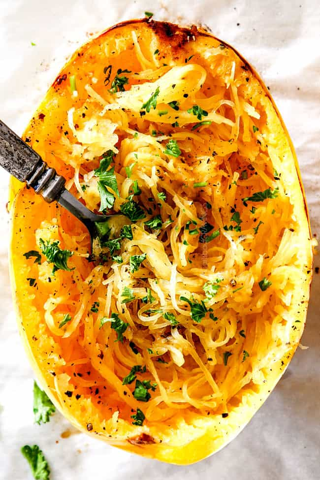

Spaghetti Squash! mmmmmmmm

Description
If you are looking for a healthier pasta alternative, look no further than the
delicious and nurtricious spaghetti squash! This creative twits on the traditional dish
gives the chef a plethora of different ways to take it, making it one of the most
versatile dinner recipes you can find. Give it a shot with some homemade pasta sauce
or whatever you are in the mood for.
Ingredients
- 1 Medium Spaghetti Squash
- Salt
- Pepper
- Olive Oil
- Onion Salt
Recipe
- Cut squash in half long ways
- Poke back of squash with fork three times allowing for ventillation
- Lightly oil inside of squash and sprinkle salt and pepper on each piece
- Heat oven to 400 degrees
- Put squash face down on baking sheet with foil
- back for 30-40 minutes, shorter if you want a toucher feel or longer if you want it to be softer
- Take out squash, and fork out the insides into a bowl
- Cover with whatever toppings and enjoy!